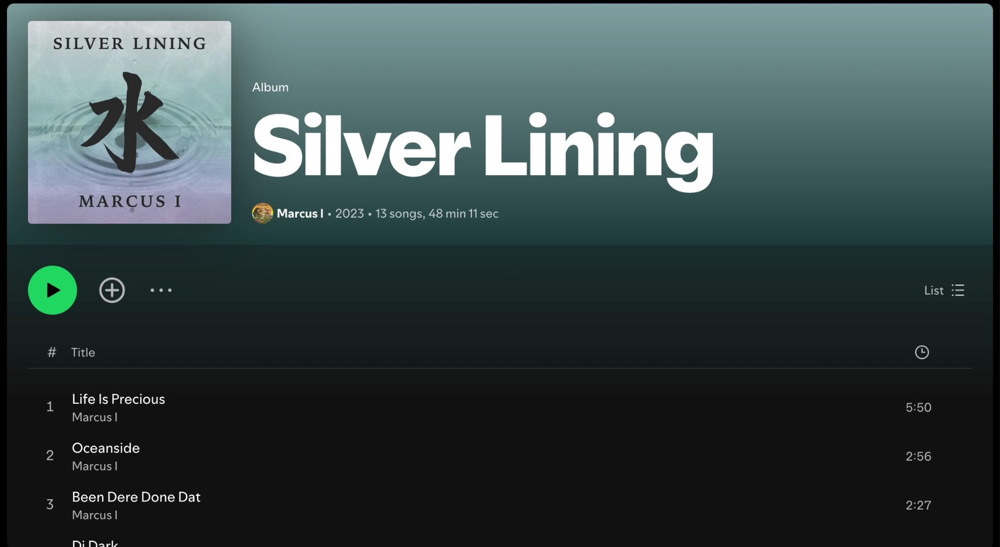

Silver Lining
Front and back CD cover art for the 2023 album by Marcus I.
Artifacts


- the project
- Front and back CD cover for the 2023 album by Marcus I.
- my part
- Album cover art, made in close collaboration with the artist.
- the result
- Front and back cover art for a 2023 album.
I created the front and back CD cover for Silver Lining, the 2023 album from artist Marcus I. He came in with a clear vision for how it should look, and my job was to make it real, so we worked through it closely together.